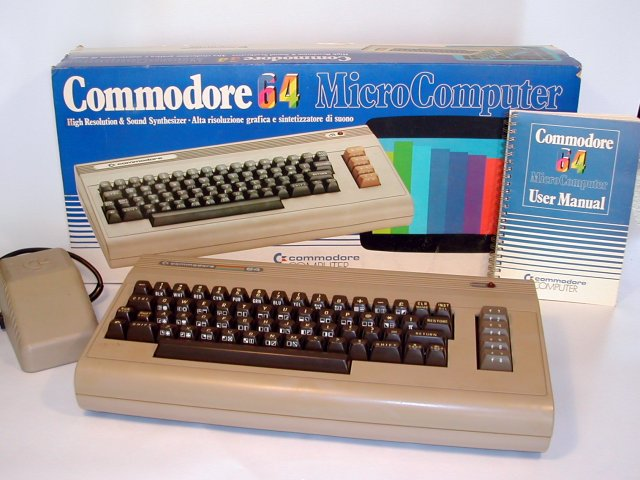

<
Uno de los mejores ordenadores de 8 bits, con un catálogo de juegos muy extenso.
Tenía 64 kilobytes de RAM y el mejor chip de sonido de la época, por lo que
muchos músicos hicieron uso de él para componer. Usaba un scroll de pantalla
muy suave que daba a los juegos un toque especial de realismo. Salieron juegos
como Test Drive, Last Ninja, Shadow of the Beast, Maniac Mansion, o la serie Ultima.
>
